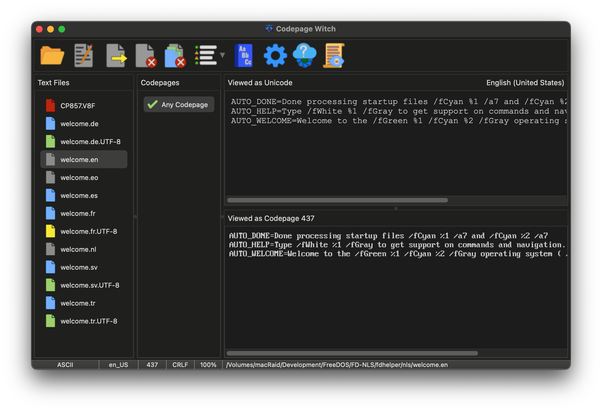

Face of the Witch: The main window
The main interface is designed to provide a real-time "Mirror" between your source files and their intended destination. While the layout is straightforward, the Witch uses a color-coded system to communicate the status and health of your files at a glance.

The Incantations: The Tool Bar
The Tool Bar is your primary source of magic. It houses the spells for opening files, exporting your transmutations, and accessing the deeper settings of the Witch.
 |
Open: Peruse the file system to select one or more files from a directory. Drag-and-Drop may also be used to cast files or entire directories into the file cauldron. |
 |
Edit: Cast the selected file into your preferred external text editor. This allows for manual refinements without leaving the Witch's presence. |
 |
Export: Seal your transmutations. This saves the currently selected file using the chosen codepage and line-ending settings. |
 |
Close: Banish the currently selected file from the cauldron. |
 |
Close All: Wash the cauldron clean, removing all files from the current session. |
 |
Filter: Narrow the list of Enchantments. Cycle through views to show only 100% matches, potential matches, or every codepage known to the Witch. |
 |
Dictionary: Consult the Master and User Dictionaries. Here you can help the Witch by checking her vocabulary and adding words to her multi-lingual knowledge. |
 |
Options: Peer into the deeper mechanics of the Witch. Adjust her appearance, behavior, and automatic file-checking rules. |
 |
Updater: Scry the digital horizon for newer versions of the Codepage Witch and lure her descendants into your clutches. |
 |
Debug Log: Open the Witch's internal ledger to view detailed analysis reports or investigate errors encountered during scrying. |
The File Cauldron: The Status Icons
As files are added, the Witch begins scrying their contents. The color of the file icon indicates her findings:
| The Analysis: The file is currently being processed in the background. | |
| Unicode Source: A UTF-8 encoded file. The Witch has mapped its best-fit codepages. | |
| Legacy Source: A codepage-encoded file. The Witch is using statistical analysis to determine its origin. | |
| Plain ASCII: Simple 7-bit text containing no special characters. Safe for any conversion. | |
| The Omen: A formatting violation (like a missing trailing newline) has been detected. Select the file to fix it. | |
| The Void: A binary file or a read error occurred. Select the file or view the log for details. |
The Enchantments: Codepage Selection
Located beside the file list, this pane shows how compatible your text is with various codepages.
- The Compatibility Graph: Green/Red graphs appear for Unicode files, showing exactly how much of the text can be safely converted. Blue/Red graphs appear for legacy Codepage files, indicating the statistical likelihood of a language match that codepage.
- The Any-Codepage Blessing: For Plain ASCII files, a single entry appears, as these files are universal and require no actual codepage.
- Filtering the List: Use the Filter icon in the Tool Bar to toggle between showing only 100% matches, partial matches, or every codepage the Witch knows.
The Dual Mirrors: Original vs. Transmuted
The right side panes allow you to compare the file's current state with its proposed conversion.
- Unicode Viewer (Upper): Displays the file as standard UTF-8 text.
- Codepage Viewer (Lower): Renders the text using the selected codepage. Any unsupported characters will appear as ¿ (Red on Black) to warn of potential data loss.
The Witch's Ledger: The Status Bar
At the very bottom of the window lies the Ledger, providing the technical details of the currently selected file:
- Encoding Status: Identifies the file as ASCII, Codepage, Unicode, Binary, or Error.
- Detected Locale & Preferred Code: Shows the scryed locale (e.g.,
tr_TR) and the recommended 'proper' codepage for that region. - Technical Specs: Displays the line-ending type (CRLF, LF, or CR) and the exact compatibility percentage of your current selection.